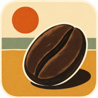
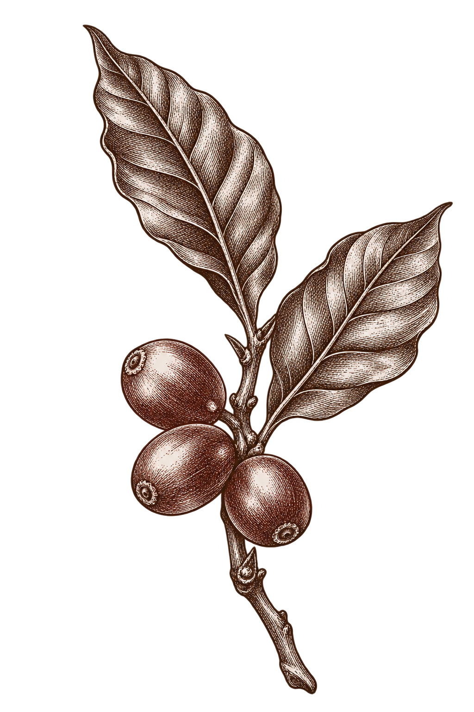

for good company

TAN & CO.Coffee Dispensary
Fresh beansbrighter days

Karl’s Fog Dispersary
A cheerful specific for fog-bound mornings
For Karl the Fog, damp spirits & unreasonably bearish mornings.
Warranted to improve the next ten minutes. The meteorology remains unconvinced.
Coffee, not medicine. All curative claims are a joke.
Keramo
Sidama, Ethiopia · Washed
Bergamot · ripe peach · honey
A floral, tea-like cup with peach sweetness and a clean, honeyed finish. Let it cool a little; the fruit gets friendlier.
A small gift, roasted with care. Best enjoyed in good company.
Roasted12 October
Ready from16 October
Lovely through26 October
Directions for a civilized cup
V60 / pour-over · Medium-fine
15 gCoffee
250 gWater
94°CTemperature
- Grind 15 g of coffee, medium-fine. Heat 250 g of water to about 94°C.
- Bloom with 45 g of water for 45 seconds. A gentle swirl is quite sufficient.
- Pour slowly to 150 g, then 250 g. Aim to finish near 2:45; adjust the grind to taste.
No scale? Use your usual filter-coffee recipe. A little experimentation is part of the gift.
The coffee-curious particulars
- Variety
- 74158
- Altitude
- 1,900–2,200 m
- Harvest
- 2025
- Roast style
- Light filter roast
- Profile
- Classic washed
- Roast level
- 2.4
- Roast duration
- 8:38
- Development
- 16.5%